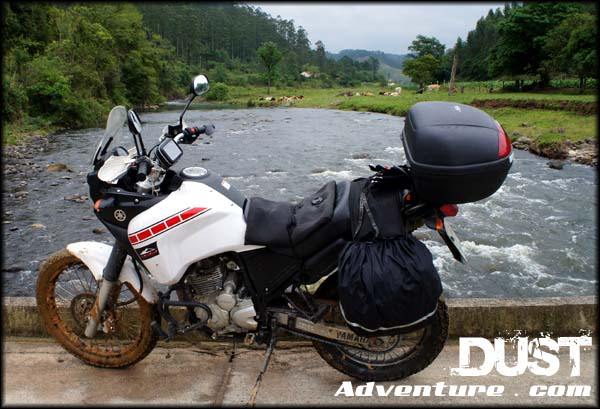
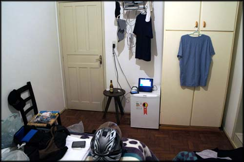
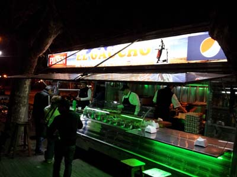
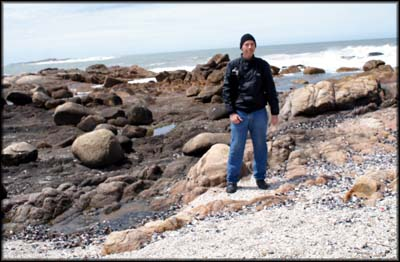
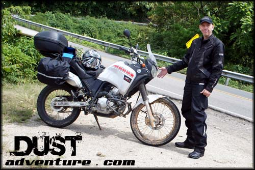

Falando agora sobre a moto e equipamentos da viagem que fiz saindo do Rio de Janeiro e indo até o Uruguai.
Definido que iria fazer uma viagem tão longa quanto pudesse, voltei então a atenção aos equipamentos de viagem que eu já possuía. Como vinha equipando a moto aos poucos, para aproveitar melhor as viagens de fim de semana, não tive que fazer muita coisa. Tenho equipamentos básicos, mas que com boa vontade e umas gambiarras serviram ao propósito.
Fiz a revisão de 10 mil Km na Yamaha, mas só por fazer mesmo, por experiência própria já vi que as oficinas das concessionárias são só enrolação, não fazem os procedimentos de manutenção previstos no manual.
Coloquei os dois pneus novos, aros novos de alumínio (o original é de ferro e bem fraco, já estavam enferrujando e amassados), corrente, coroa e pinhão, e guardei os originais que ainda estão bons. O mesmo fiz com as pastilhas de freio.
Eis então a moto e equipamentos instalados, que foram usados na viagem:
Ténéré 250 com toda a bagagem da viagem
É uma Yamaha Ténéré 250 ano 2012/2013, que eu chamo de "Monstrinha". Antes da viagem estava com cerca de 11 mil Km rodados.
Está equipada com protetor de motor com pedaleiras avançadas (as quais quase não uso, porque percebi que essa posição, apesar de descansar o joelho, me provoca dores na coluna), alforges laterais de lona marca Acriparts (no terceiro dia de viagem um deles já estava rasgando, tive que amarrar com elásticos de bagagem), e um bauleto Givi de 45 litros. Dentro do baú instalei uma tomada de 12v para recarregar algum equipamento, mas nem usei.
Levei sobressalente duas câmaras de ar (pneu dianteiro e traseiro), mas não as utilizei. No fim me pareceu um peso morto, tudo bem que se tivesse que trocar durante a viagem provavelmente pagaria mais caro em uma toda remendada num borracheiro qualquer, mas no fim achei besteira ter levado, não fui para nenhum lugar tão distante assim do comércio.
Coloquei os pneus mais baratos que encontrei no mercado do Rio de Janeiro (Maggion), e que consequentemente duram menos quilômetros. E fiz bem. Na volta o pneu já estava completamente quadrado, gastou bastante no centro e quase nada nas bordas, porque a maior parte do caminho no sul do Brasil e no Uruguai era só de retas, sem curvas.
Também levei dois tubos desses reparadores de furo, marca Brandy. São tubos com ar comprimido e PVC líquido, e se o furo na câmara for pequeno, se consegue encher o pneu e vedar o vazamento. Tive os dois pneus furados. O da frente na altura de Joinville/SC, o reparador me salvou na estrada, sem borracheiro próximo. O de trás foi em Durazno, já no Uruguai, mas como estava dentro da cidade, não precisei usar o reparador e consegui um borracheiro rodando um pouquinho com o pneu furado mesmo.

Usando o reparador de furos em pneus da Brandy, funcionou e me salvou!
Tudo que eu levei dentro dos alforges eu colocava em sacos plásticos individuais. Sábia decisão, qualquer chuva enchia os alforges Acriparts de água, mesmo com aquelas capas impermeáveis, quando chegava virava a água como se fosse um balde.
Capa de chuva, comprei uma nova, indispensável, obviamente. E também um bom par de botas impermeáveis. A capa de chuva que usei é da marca Protector, de nylon, pouco volume; e as botas impermeáveis marca Steitz. Ambas aprovadas, peguei chuvas bem fortes e não entrou água. A capa de chuva já teve um rasgo na altura da canela, devo ter batido na pedaleira empurrando a moto. Acho que deveriam fazer aquele pedaço mais reforçado.
Capacete fui com o meu velho e vagabundo Yohe Pratik articulado. Pesado demais, me provocou dores no pescoço com o avançar da viagem. Nesse item eu deveria ter investido, mas não deu tempo, no Rio de Janeiro não tem muita oferta em lojas físicas de capacetes bons.
Para fotos, não tenho uma boa câmera. Por isso peguei emprestada uma Sony Nex, que fez boas imagens, mesmo no modo automático, já que eu não sei usar os recursos de fotografia. Vídeos levei minha GoPro Hero 3. Para fazer o backup, levei um netbook velho que estava aqui parado, da Acer. E um HD externo emprestado da Samsung. Tudo funcionou direitinho, apesar do meu medo de danos nos equipamentos que têm disco rígido, por causa da vibração da moto.
A cada noite, eu parava no hotel, desfazia as malas, ligava o netbook e deixava fazendo o backup dos vídeos da GoPro e fotos da câmera. Tomava um banho e ia para a rua jantar e conhecer a noite da cidade. Quando voltava já tinha acabado de copiar tudo pro HD externo, não dava muito trabalho, mas era um ritual que eu tinha que fazer porque não tinha cartões extras.
Estação de trabalho. A cada noite no hotel eu fazia o backup de fotos e vídeos, para esvaziar os cartões de memória. E roupas secando depois de lavadas... varal improvisado e uma favela só minha...
Em alguns dias, quando estava chovendo, eu não usei a câmera fotográfica que peguei emprestada por medo de danificá-la. Nesses dias tirei foto com meu celular, um Samsung Galaxy SII, já obsoleto no mercado, mas funcional e me atende bem. As fotos feitas de dia com o celular até ficam legais (são 8 MP), mas sem iluminação adequada não pude aproveitar as que tirei à noite.
Foto à noite com o Galaxy SII, no trailler onde comi meu primeiro Chivito, em Durazno/UY, sensacional (o lanche, a foto não ficou boa à noite...)
E meu celular ainda quebrou um galho na função de GPS. Eu levei meu aparelho de GPS Foston, mas o xing-ling não aguentou nem o primeiro dia de viagem no suporte de guidão. A umidade por causa da chuva - apesar de estar protegido por capa impermeável - e a vibração provocada pelo giro do motor deixou ele doido. Só funcionava quando queria, a tela touchscreen ficou toda descalibrada e não tem mais jeito... imprestável. Por sorte achei um aplicativo de GPS offline pro celular, que não demanda conexão de dados para funcionar, e me virei com ele. Foi o único que achei, para Android, gratuito, e que tinha mapa do Uruguai, chama-se Navigator. Me salvou legal. Haviam outros, mas sem mapas do Uruguai.
Levei uma calça jeans para usar à noite, e minha intenção era comprar uma calça cargo de sarja durante a viagem e jogar a jeans fora, porque faz muito volume e demora a secar. Não consegui comprar outra calça, e a jeans ficou sem lavar até voltar pro RJ. No último dia, coitada, estava em petição de miséria... mas como não pretendia pegar nenhuma balada no final, não teve problema.
Esse dia (estava frio) na praia de calça jeans foi o derradeiro, depois disso não tive mais como usar de tão suja hahaha
As outras peças de roupa tive como lavar durante a viagem, ou jogar fora e comprar novas, como fiz com as meias. Camisas tipo de corrida e malhação, desse tecido dry fit, que seca rápido, quebraram um galho.
Equipamentos básicos, mas foram eficazes
Durante a pilotagem usava uma calça de cordura da ASW - mais voltada para trilha do que viagem, mas serviu, com o uso simultâneo de uma calça segunda pela Quechua - e uma jaqueta X11 modelo Iron, que já me ferrou duas vezes com problemas no fecho eclair, mas na viagem resistiu sem me deixar na mão.
No próximo texto vou falar resumidamente da rota que acabei fazendo ao final, gastos aproximados, alguma burocracia básica para entrar no Uruguai com a moto, e outras coisas.
---------- Comentários são bem vindos, inclusive dúvidas que eu saiba responder. Por questão de organização, comentários sobre a viagem ao Uruguai estarão concentrados no primeiro artigo que pode ser acessado aqui: Viagem de Moto do Rio ao Uruguai – Apresentação. Obrigado pela vista!